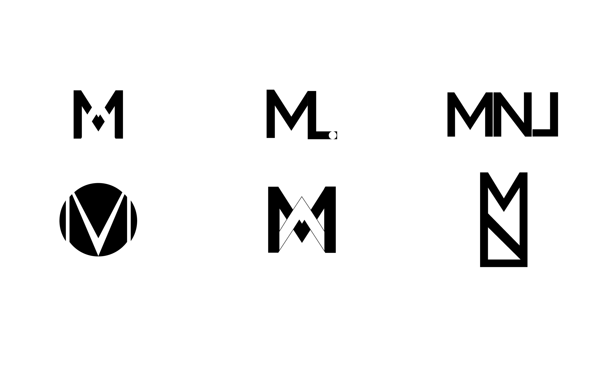
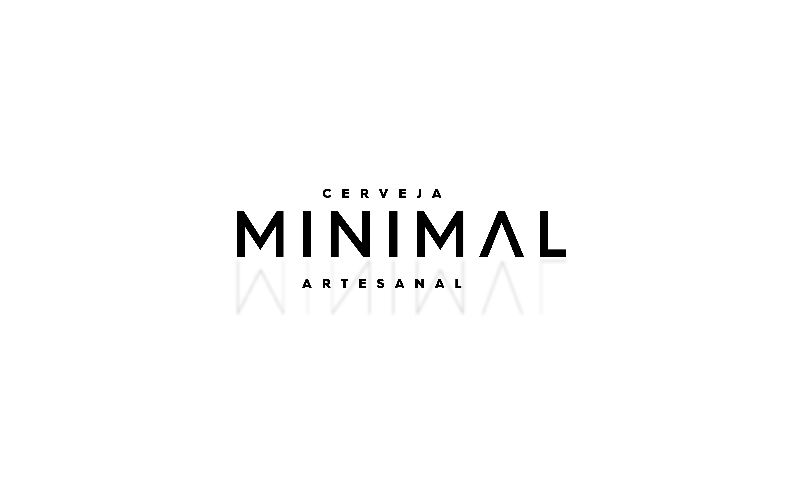
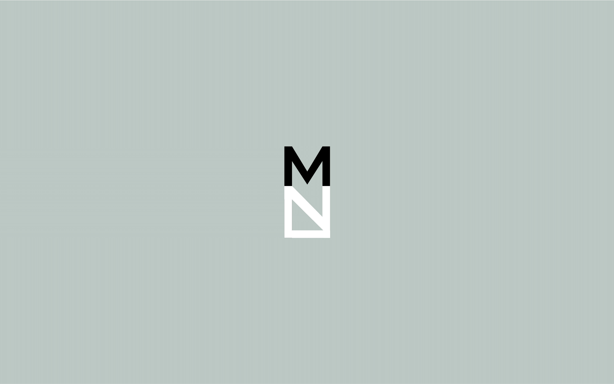
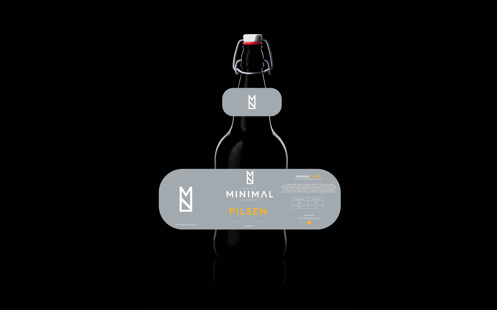
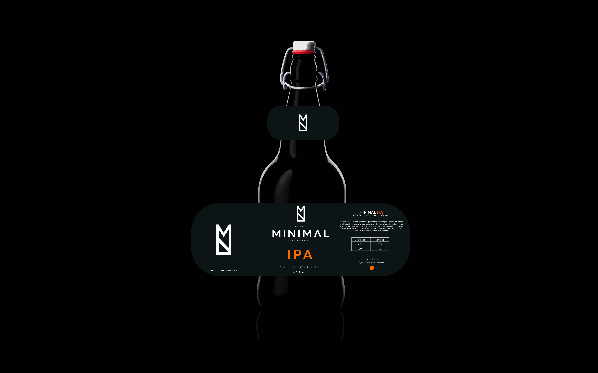
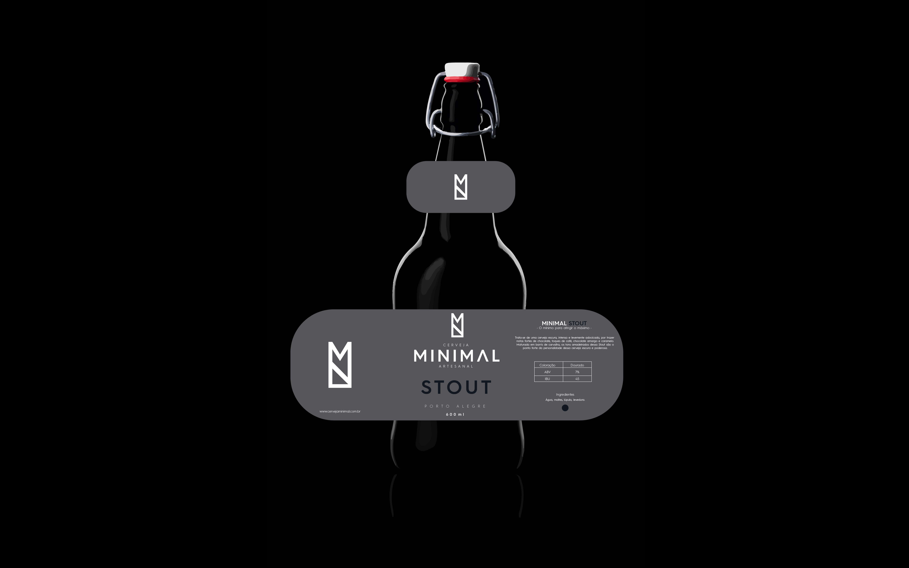
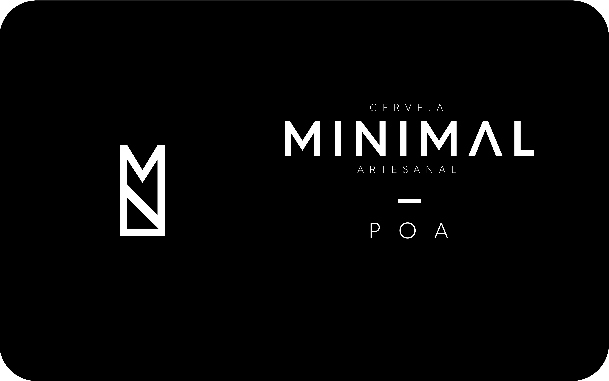
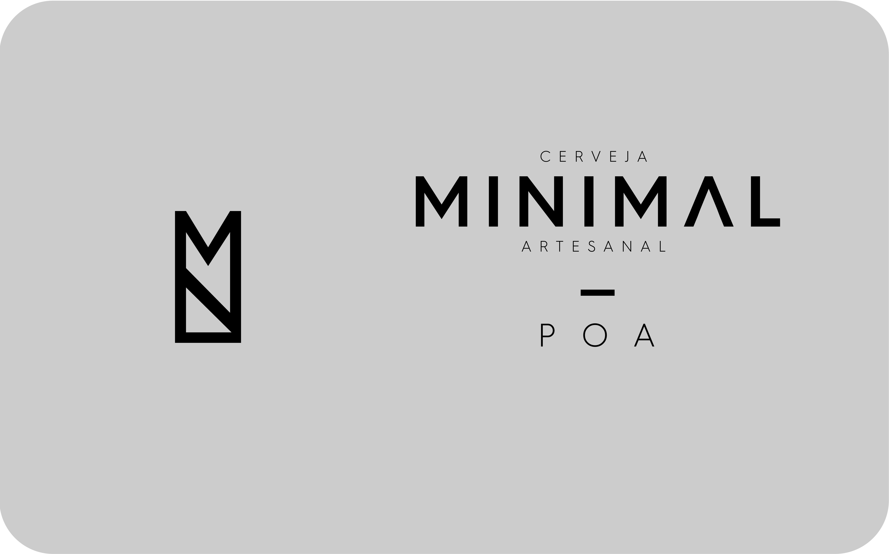
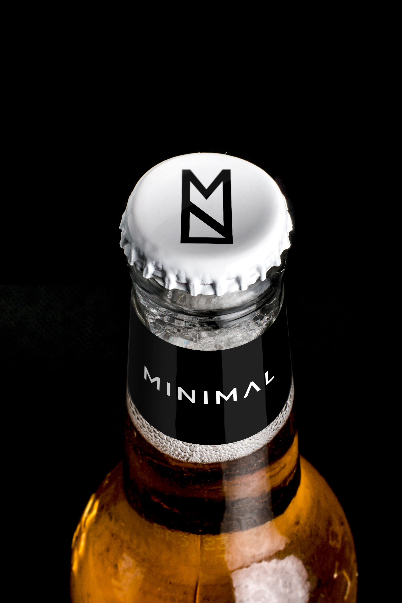
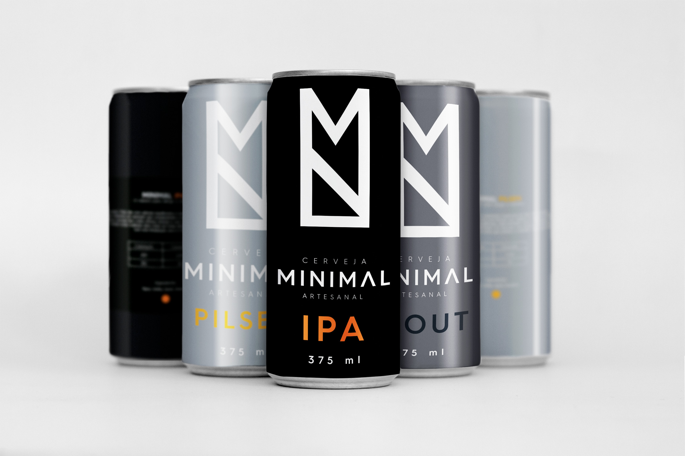

Minimal Craft Beer
Branding, Graphic Design
The minimalist movement has been getting traction in the second decade of the 21st century becoming a lifestyle attempting to stay more in tune with “being” than “having”. Consumption, fed by cultural propaganda, detaches humans from what really matters - interpersonal relationships. Minimalism works as a tool that can aid people to free themselves from senseless material consumption. It is a tool for freedom - freedom from fear, freedom from insecurity, shame, anxiety, and especially from our own culture that we grew up into, invariably learning to follow and believe in its nonsensical illusions. This beer is meant to celebrate this lifestyle which incites people to break from the old norm in order to adopt a new way of living more focused on happiness and well being. For more information, please visit theminimalists.com and watch the documentary on Netflix - MINIMALISM.










